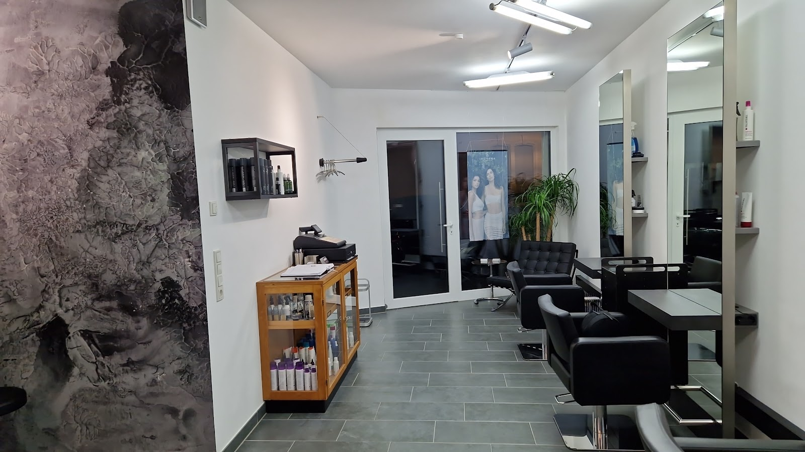
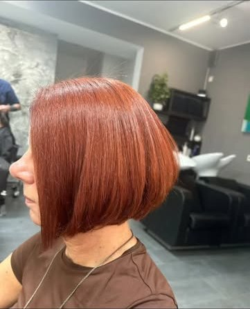
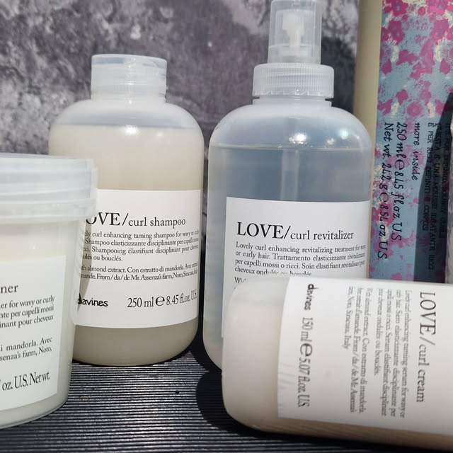
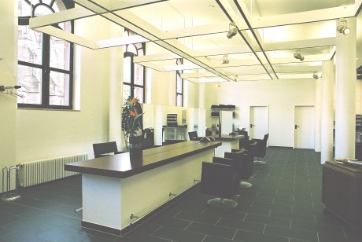
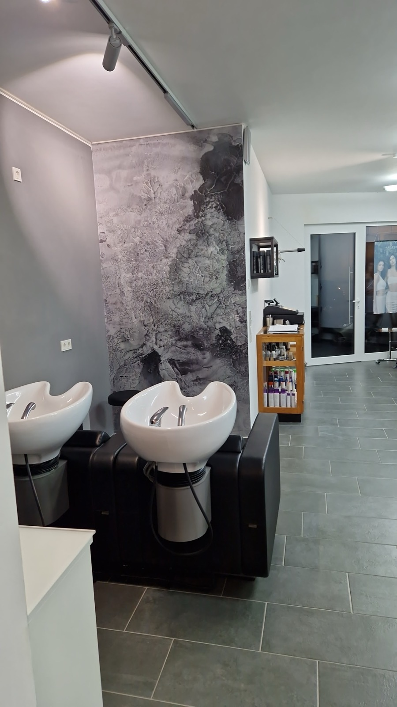
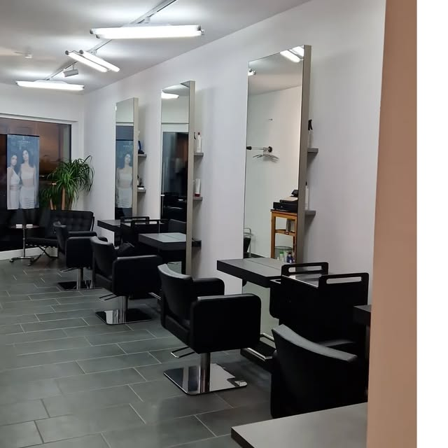

Individuelle Typberatung
Beratung zu Schnitt, Farbe und Pflege – passend zu Ihrem Typ, Ihrem Haar und Ihrem Alltag.

Meisterbetrieb im Friseurhandwerk · Nauwieser Viertel
Im Nauwieser Viertel, Saarbrücken-St. Johann. Typberatung, Schnitt, Farbe und Pflege mit Davines – vom Handwerksmeister persönlich.
Leistungen
Beratung, Schnitt, Farbe und Pflege aus einer Hand – auf Ihren Typ abgestimmt, nicht auf einen Katalog.
Beratung zu Schnitt, Farbe und Pflege – passend zu Ihrem Typ, Ihrem Haar und Ihrem Alltag.
Perfekter Schnitt für Damen und Herren – präzise gearbeitet, damit die Frisur auch im Alltag sitzt.
Typ- und frisurengerechte Farbe – von natürlichem Glanz bis zur klaren Veränderung.
Feine Akzente, die das Haar lebendiger wirken lassen und mit dem Grundton harmonieren.
Schonende Umformung für mehr Volumen oder Struktur – abgestimmt auf Haarzustand und Wunschergebnis.
Intensive Pflege im Salon und Produkte von Davines für zu Hause – nachhaltig und auf Ihr Haar abgestimmt.

Farbe · Pflege · Davines
Eine gute Farbe beginnt mit dem Blick auf Ihr Haar – und endet nicht beim Ausspülen. Im Salon arbeiten wir mit Davines, einer Marke für nachhaltige Haarpflege, die Farbe und Struktur schützt.
Für Locken und Wellen setzen wir unter anderem auf die LOVE-Curl-Serie. Was zu Ihrem Haar passt, besprechen wir in der Typberatung.

Terminvereinbarung
Termine vereinbaren Sie direkt telefonisch mit dem Salon. Eine Online-Buchung gibt es nicht – dafür ein kurzes Gespräch, in dem wir Ihren Wunsch gleich mit einplanen.
Dienstag bis Freitag 09:30 – 18:30 Uhr · Samstag 08:00 – 14:00 Uhr
Über uns
2002 eröffnete Wolfgang Schwan seinen Salon in der Dudweilerstraße in Saarbrücken-St. Johann. Als Handwerksmeister im Friseurhandwerk steht er bis heute selbst am Stuhl – mit dem Anspruch, dass jeder Schnitt und jede Farbe zum Menschen passt, der sie trägt.
Heute finden Sie den Salon im Nauwieser Viertel: helle Wände, marmorierte Wandgestaltung, schwarze Bedienstühle vor hohen Spiegeln und zwei Waschplätze. Gearbeitet wird mit Davines – nachhaltige Pflege, die zum Handwerk passt.

Galerie


Mehr Arbeiten und Einblicke auf Instagram: @wolfgang_schwan_friseur
Kontakt
Telefon0681 9581599
E-Mailw.schwan@friseur-schwan.de
Instagram@wolfgang_schwan_friseur
FacebookWolfgang Schwan Friseur
| Montag | geschlossen |
|---|---|
| Dienstag | 09:30 – 18:30 Uhr |
| Mittwoch | 09:30 – 18:30 Uhr |
| Donnerstag | 09:30 – 18:30 Uhr |
| Freitag | 09:30 – 18:30 Uhr |
| Samstag | 08:00 – 14:00 Uhr |
| Sonntag | geschlossen |